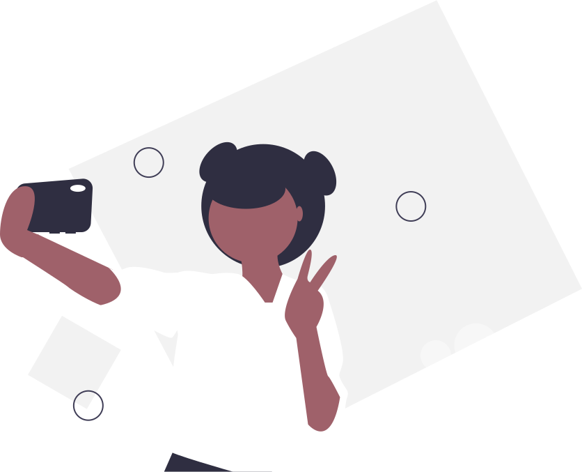
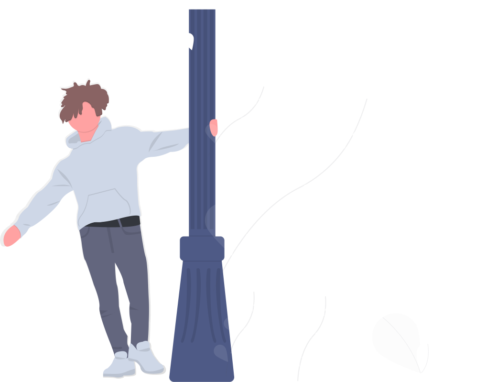

Criar uma senha forte vai ser como curtir uma brisa com esse tutorial!
Crie palavras que não existam no dicionário, escolha uma frase qualquer que lhe agrade e selecione partes de cada palavra. Combine-as com números e símbolos
"É muito importante ter uma senha forte!"
Émuiimte1SenFor!
Use uma frase longa que faça sentido pra você e que seja fácil de lembrar. Não use ditados populares ou frases que possam ser ligadas a você como trechos da sua música preferida
1 dia serei Mestre em senhas
Use palavras aleatórias combinadas
#LápisCamisaOrelha
Substitua letras por números ou símbolos, mas cuidado com as substiuições óbvias como a por @ e o por 0, pense fora da caixa ;)
#7ápis5amisa9relha

Lembre-se
Não forneça sua senhas para outras pessoas
Não anote suas senhas em locais de fácil acesso
Não use a mesma senha para todos os serviços que acessa. Cofres de senhas como o Keepass, Bitwaren e Firefox Lockwise podem te auxiliar no gerenciamento